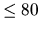

Consider several lines of text written with capital letters and one character
called KEY, specified on a line preceding the text. The words in the text are
separated by spaces. The maximum word length is .
There are no words splitted
between two lines. The line length is also .
Write a program to display an index of all words within the text starting
with the KEY. The index must be alphabetically sorted. Each word appears in
the index only once and must be followed by the numbers of all the lines in
which it appears. Only a single occurrence of each word on a line must
be included in the index.
T
CONSIDER SEVERAL LINES OF TEXT AND ONE CHARACTER CALLED KEY,
SPECIFIED ON A LINE PRECEDING THE TEXT. THE WORDS IN THE TEXT ARE
SEPARATED BY SINGLE SPACE. THERE ARE NO WORDS SPLITTED BETWEEN TWO
LINES.
WRITE A PROGRAM TO DISPLAY AN INDEX OF ALL WORDS WITHIN THE TEXT
STARTING WITH THE KEY. THE INDEX MUST BE ALPHABETICALLY SORTED. EACH
WORD IN THE INDEX MUST BE FOLLOWED BY THE LIST OF THE LINE NUMBERS IN
WHICH IT APPEARS.
TEXT 1 2 5
THE 2 5 6 7
THERE 3
TO 5
TWO 3
Miguel Revilla
2001-01-05